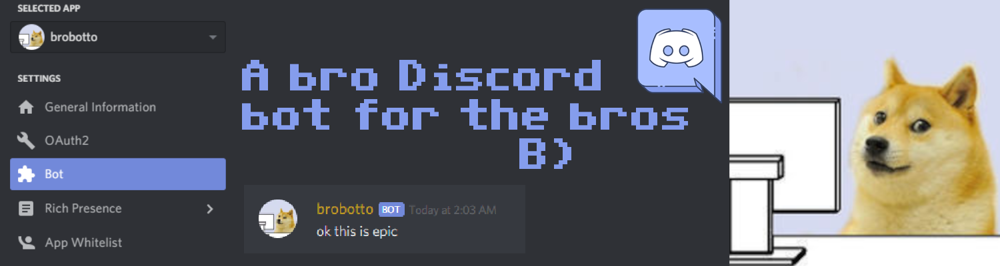

files in folders
Here are some of the projects I worked on and I'm proud enough of them to display here. More to come!
Text Color Predictor
This was really fun but also a pain to work on. NN with one hidden layer containing 5 neurons in it that takes 3 inputs (RGB values of a random color) and decides whether text over that color should be black or white. Uses back propagation. Written from scratch in JS (there's also a PY ver).
Brobotto
What and why is this? It's a bot for Discord. Has some cool functionalities like sending random images of Etika or giving you the weather or sending random pokemon. More in the readme. Also replies from time to time. Closest thing I've got to a son. Hosted on a RasPi on my desk. I think he has personality!
GitHub | Server Invite | Article I wrote on him
That's about it for now, but I have more works in progress!